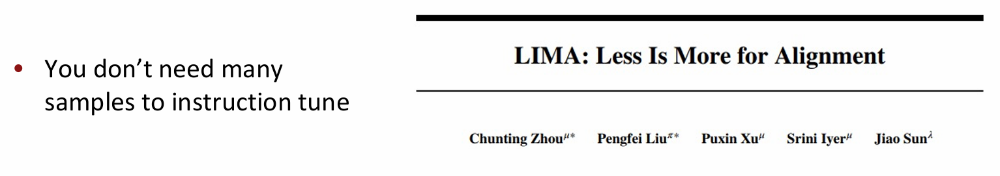
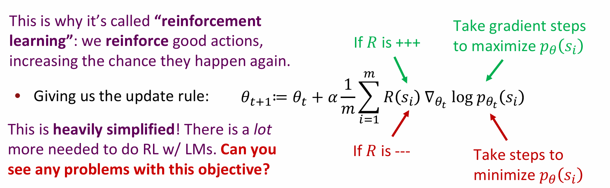
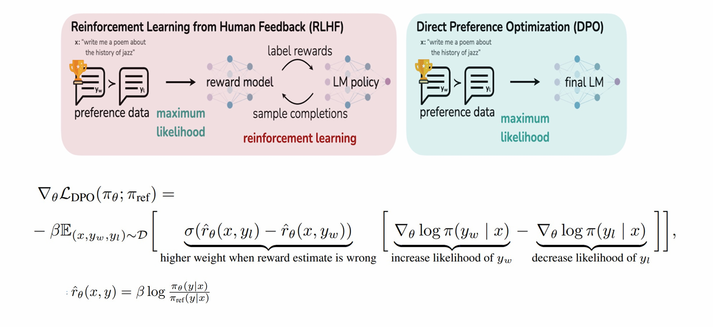

LLM is all you need.
Lecture 10: Instruction Finetuning, and RLHF
预训练可以通过作为参数初始化来提升 NLP 应用的效果，它让 LLM 成为了 “世界模型” ！然而，仅仅进行语言建模并不等于能有效地帮助用户，这就是 Finetuning Paradigm 出现的原因。
指令微调（Instruction finetuning，Flan-T5）
指令微调指的是：收集包含多种任务的【指令，输出】对，并用这些数据微调语言模型。研究已经证明，在一组表述为指令的数据集上微调语言模型可以提高模型性能和对未知任务的泛化能力。在本文中，作者探索了指令微调，特别关注：
- (1) 缩放任务数量；
- (2) 缩放模型大小；
- (3) 链式思维数据微调；
论文发现，在上述方面进行指令微调可以显着提高各种模型（PaLM、T5、U-PaLM）、提示设置（零样本、少样本、CoT）和评估基准（MMLU、BBH）。
指令是一组数据集，一组用指令表达的任务。使用指令数据进行微调使模型能够更好地响应指令，并减少对样本的需求。 一般的发现是，微调的效果与任务数量和模型大小成比例。两种关系都是正相关的（模型越大、训练任务越多，指令在少样本和零样本示例中性能提升更多）。
这项研究还使用思维链 (CoT) 数据对模型进行微调，CoT 数据指令微调的另一个重要好处是解锁零样本推理。这测试了模型在没有 CoT 的少量示例的情况下产生自己的推理技能的能力。
然而正如预训练模型一样，数据和模型规模成为了指令微调成功的关键。例如，Super Natural Instructions 数据集。这个数据集包含了超过1600个不同的任务和超过300万个示例。这样的大规模数据集可以帮助我们的模型学习到更广泛的语言模式和任务特定的知识。
同时，一个新的 Benchmark 也被提出来。Massive Multitask Language Understanding（MMLU）旨在衡量语言模型在57个不同的、知识密集型任务上的表现。这些任务覆盖了广泛的领域，包括但不限于历史、地理、数学、科学等，它们要求模型不仅要有强大的语言理解能力，还要有广泛的世界知识和推理能力。
MMLU的出现，为我们提供了一个全新的视角来评估语言模型的性能。传统的语言模型评估往往集中在单一任务上，比如 GLUE 或者 SQuAD，这些评估虽然重要，但它们并不能全面反映一个模型的多任务处理能力。
最后，说是指令微调，但感觉其实更像是我们现在所说的监督微调 (SFT)。这种方法简单直白，也易泛化到没见过的任务上。然而，监督指令微调也有几点局限性：
- 数据收集成本高昂： 为了训练和评估模型，我们需要大量的正确答案或期望输出，这些数据通常需要人工标注，这既耗时又昂贵。
- 开放性任务没有标准答案： 比如编写故事并没有一个“正确”的答案，可以有无数种创意和情节发展，每种都是独特的，对于这类人物的评估也有一定困难。
- 即使进行了指令微调，语言模型的目标与满足人类偏好的目标之间仍然存在不匹配。语言模型通常被优化以生成在统计上可能的输出，而不是那些最能符合人类期望和偏好的输出。
此外，其实指令微调的数据也并非需要很多 — — 研究表明大型语言模型中的几乎所有知识都是在预训练期间学习的，并且只需要有限的指令调优数据来教模型产生高质量的输出。

人类反馈强化学习（RLHF）
为了对齐人类期望，我们引入了强化学习的概念。具体来说，对于语言模型（LM）生成的样本 ，我们假设有一种方法可以获得人类对这个样本的奖励 ，数值越高表示越好。我们的目标是最大化从语言模型中抽取的样本的预期奖励 。这意味着我们可以直接从人类那里获得关于模型输出质量的反馈。
将 RL 与 LM 结合是一个比较新的领域，得益于新的RL算法的发展，特别是那些适用于大型神经网络模型的算法（例如PPO，由Schulman等人在2017年提出）。
为了最大化预期奖励 ，我们可以使用梯度上升的方法更新模型参数 ：
𝜃_{t+1}=𝜃_t+𝛼∇_{\theta_t} 𝔼_{\hat s\sim p_{\theta_t}(s)} [R(\hat s)]
解释一下就是，对于当前模型（参数 ）生成的一个样本 （或者说是 response）。我们想最大化人类奖励的期望 ，于是朝着梯度上升的方向更新 .
最简单的方式是通过 蒙特卡洛采样 得到若干条样本，并更新参数，使得奖励高的样本更容易出现。

How do we model human preferences?
现在对于任意的、不可微分的奖励函数 ，我们可以训练我们的语言模型来最大化预期奖励，感觉无敌了。但问题是让人类给样本打分实在是太慢，并且也很浪费钱。
为了克服这个问题，我们可以将人类偏好的建模视为一个独立的自然语言处理（NLP）问题。具体来说，我们可以训练一个 奖励模型 ，该模型能够根据已有的标注数据，预测人类的偏好。这样我们就可以在训练语言模型时采用这个模型的奖励输出，而不是直接依赖于人类的反馈。
除此之外，RLHF 还面临着噪声和道德问题。一般来讲，我们不直接要求人类给出具体的评分，而是让他们在两个输出之间进行比较。这种方法被称为 成对比较（pairwise comparisons） ，它通常更加可靠，因为：
- 简化决策：成对比较简化了评价者的任务，他们只需要判断两个选项中哪一个更好，而不是给出一个具体的评分。
- 减少噪声：由于比较是基于相对优劣，这有助于减少单个评价中的随机噪声。
- 校准一致性：成对比较可以帮助评价者建立更加一致的评价标准，因为他们可以直接看到比较的选项。
这里的 表示奖励模型的损失函数， 和 分别是模型对正样本 和负样本 的评分。
ChatGPT: Instruction Finetuning + RLHF for dialog agents
ChatGPT 就是以上两种方法的集大成者：
-
使用人类反馈强化学习 (RLHF) 训练了这个模型，使用与
InstructGPT相同的方法，但在数据收集设置上略有不同。我们使用监督微调训练了一个初始模型：人类提供了对话，他们在对话中同时扮演用户和 AI 助手。我们将新的对话数据集与
InstructGPT数据集混合，并将其转换为对话格式。 -
为了创建强化学习的奖励模型，我们需要收集比较数据，这些数据由两个或多个按质量排名的模型响应组成。为了收集这些数据，我们采用了AI培训师与聊天机器人进行的对话。
我们随机选择了一个模型编写的消息，采样了几个替代完成，并让AI培训师对其进行排名。使用这些奖励模型，我们可以使用近端政策优化 (PPO) 微调模型。
此外，在RLHF的研究中，由于获取大量的人类反馈既昂贵又耗时，许多研究工作开始探索使用模拟的GPT-4反馈作为人类反馈的替代品。根据 [Dubois et al 2023] 的研究，ChatGPT 喜欢一条条列表给你解释东西的习惯也可能是 RLHF 使然的结果。
Limitations of RL + RM & Removing the ‘RL’ from RLHF
然而，RLHF 仍面临着以下问题：
-
**人类偏好也有可能是不可靠的。**人类反馈可能会受到个人偏见、情绪状态或当时情境的影响，导致反馈结果不稳定或不一致。
-
“奖励黑客”（Reward Hacking） 也是一个常见问题。它指的是模型可能会学会奖励系统的偏好性，生成一些看似符合人类偏好但实际上没用的输出，以获得更高的奖励，但不能真正提高其性能。
-
RLHF 的训练过程十分繁琐。 首先我们得让模型生成若干样本，然后再用 Reward Model 对其打分，打完分之后再优化 LM 的生成策略并不断迭代，这样做会使得过程非常冗杂，并且会产生上述“奖励黑客”的问题。

因此我们提出了 DPO（Direct Preference Optimization），旨在直接优化模型输出以符合人类的偏好。具体怎么实现的看隔壁 RL 笔记。
